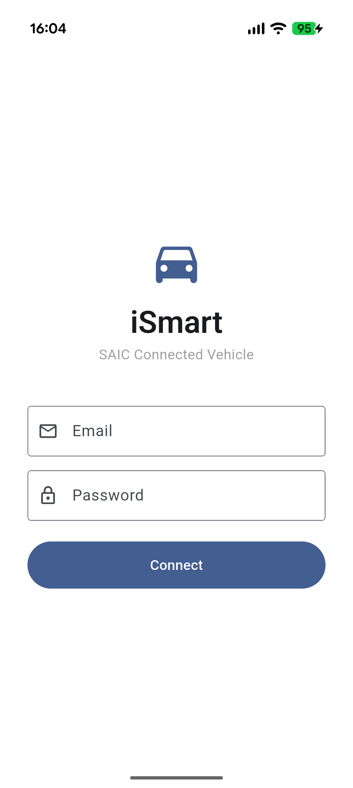
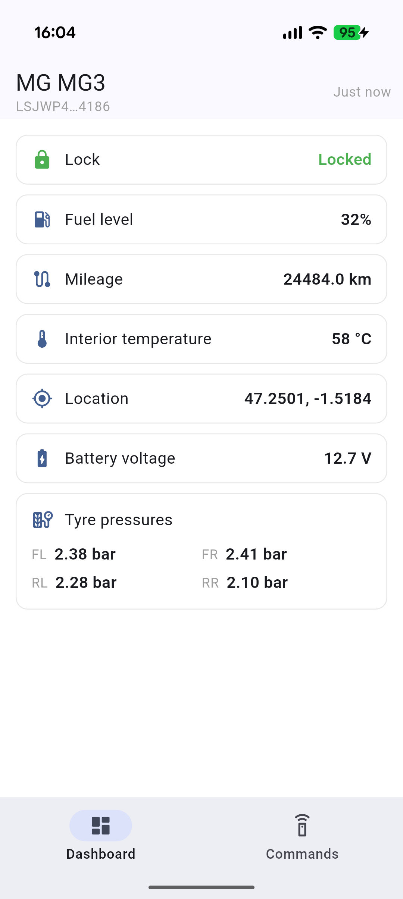
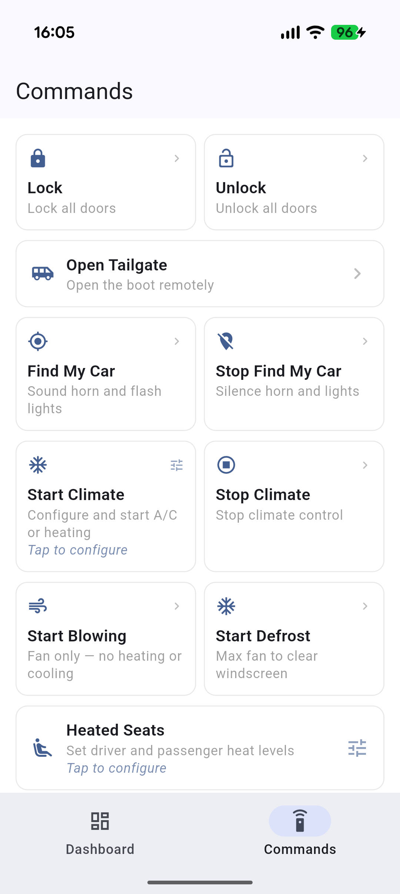
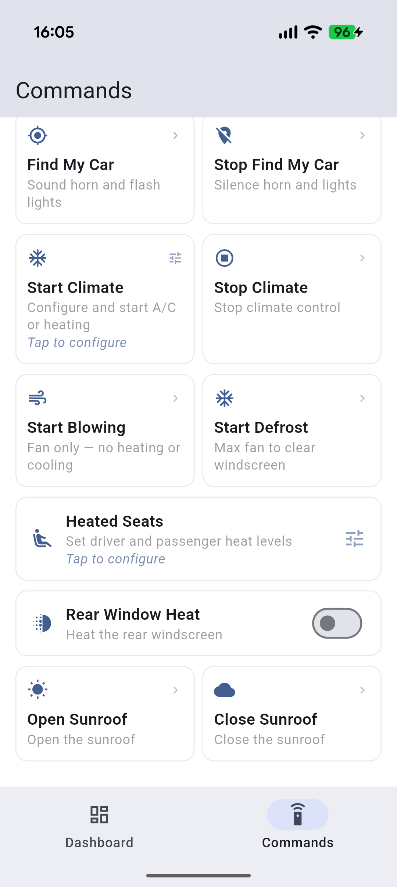

saic_ismart
Dart client for the SAIC iSmart API — MG, Roewe, Maxus/LDV connected vehicles.
v1.0.0 — ready for pub.dev.
What is this?
saic_ismart is a pure Dart package to interact with the SAIC iSmart connected vehicle API. It works for any vehicle compatible with the MG iSmart app — MG, Roewe, Maxus/LDV models.
It is the first Dart/Flutter client in the SAIC-iSmart-API open source ecosystem, alongside the existing Python and Java clients.
Pure Dart — no Kotlin, no Swift, no native code. Works in Flutter mobile, Wear OS, desktop, or any Dart project.
Supported vehicles
| Brand | Models | Regions | Status |
|---|---|---|---|
| MG | MG3 Hybrid, MG4 EV, MG5 EV, MG ZS EV, MG HS Plug-in… | EU (tested), AU, IN, TR, Rest of World (untested — community welcome) | MG3 Hybrid tested (dev device) |
| Roewe | RX5 eMax, ei6 MAX… | EU, CN | Expected — needs contributor |
| Maxus / LDV | eT60, eDeliver… | EU | Expected — needs contributor |
EV-specific features (SoC, charging management, climate) require a contributor with the right hardware. See Contributing.
Features
v0.1.0
- ✅ Authentication & token refresh
- ✅ List vehicles linked to account
- ✅
getVehicleStatus(vin)— GPS location, lock state, mileage - ✅ Built-in cache with configurable TTL + 600 s cooldown enforcement
- ✅ Single-session conflict detection & handling
- ✅ EU region support (
gateway-mg-eu.soimt.com)
Added in v0.2.0
- ✅ Tyre pressure conversion helpers (confirmed PSI×2 unit, MG3-validated)
- ✅ Door, window, lock, bonnet and boot state enums
- ✅ Typed
VehicleAlertInfomodel (ASN.1-confirmed schema) - ✅ Multi-region:
australia,india,turkey,restOfWorld - ✅ Structured exception hierarchy (
SaicExceptionand subclasses) - ✅ Unit conversion helpers (
mileageToKm,fuelRangeToKm,temperatureCelsius…) - ✅ Convenience getters on
BasicVehicleStatus(mileageKm,lockState,driverDoorStatus,frontLeftTyrePressureBar…)
Added in v1.0.0
- ✅
lockVehicle(vin)/unlockVehicle(vin)— remote door lock/unlock - ✅
openTailgate(vin)— remote tailgate release - ✅
findMyCar(vin)/stopFindMyCar(vin)— horn + lights trigger and stop - ✅
startClimate(vin, {mode, temperatureIndex})/stopClimate(vin)— remote A/C or heating - ✅
startBlowing(vin)/startDefrost(vin)— fan-only and defrost convenience wrappers - ✅
controlHeatedSeats(vin, {driverLevel, passengerLevel})— heated seat control withHeatLevelenum - ✅
controlRearWindowHeat(vin, {enable})— rear window heating element - ✅
controlSunroof(vin, {open})— remote sunroof open/close - ✅
logout()— clear session and cache - ✅
isLoggedIn/tokenExpiration— session lifecycle inspection
See the full roadmap below.
Quick start
Prerequisites: You need an existing SAIC iSmart account. Account creation is only available through the official MG iSmart app.
# pubspec.yaml
dependencies:
saic_ismart: ^1.0.0
import 'package:saic_ismart/saic_ismart.dart';
final client = SaicClient(
SaicConfig(username: 'you@example.com', password: '••••••••'),
);
await client.login();
final vehicles = await client.getVehicles();
final status = await client.getVehicleStatus(vehicles.first.vin);
print(status.basicVehicleStatus?.lockStatus); // 1 = locked
print(status.basicVehicleStatus?.mileage); // raw decimeters
print(status.gpsPosition?.wayPoint?.position?.latitude); // raw integer ÷ 1,000,000 = degrees
Real-world output
✓ Logged in as user@example.com, token expires at 2026-11-19 15:33:12
✓ Found 1 vehicle(s)
- MG MG3 2023 (VIN: LSJXXXXXXXXXXXXXXX)
✓ Vehicle status:
Locked: 1
Engine running: false
Parked: true
Mileage: 243790
Fuel level: 45%
Location: 47.XXXXXX, -1.XXXXXX
GPS status: GpsStatus.fix2d
Status time: 1779548697
Note: mileage is returned in decameters (243790 = ~24,379 km). Use
status.basicVehicleStatus?.mileageKmfor a converted value.
Important: API constraints
Single session — The SAIC API allows only one active session at a time. Calling this package will pause the official iSmart app for ~900 seconds. The client handles this automatically, but be aware of it if you use the official app alongside.
600 s cooldown — The API enforces a minimum delay between vehicle data requests to protect the 12V battery. The client includes a built-in cache that respects this limit. Do not bypass it.
No real-time data — Vehicle status is polled, not streamed. Data reflects a snapshot, not a live feed.
Example app
| Login | Dashboard | Commands (1/2) | Commands (2/2) |
|---|---|---|---|
 |
 |
 |
 |
Roadmap
✅ v0.1.0 — Foundations · released 2026-05-23
- Auth + token refresh
getVehicles(),getVehicleStatus(vin)- Cache/cooldown + session conflict handling
- EU region
- Tested on MG3 Hybrid EU
✅ v0.2.0 — Extended data & multi-region · released 2026-05-24
- Tyre pressure, window & door state
- Vehicle alert model (
VehicleAlertInfo) - Multi-region (AU, IN, TR, Rest of World)
- Structured errors —
SaicException - Unit conversion helpers & convenience getters
✅ v1.0.0 — Remote actions · released 2026-05-25
- Remote lock/unlock, tailgate
- Find my car (horn + lights)
- Remote climate: A/C, heat, blow, defrost, heated seats, rear window heat, sunroof
- Session lifecycle:
logout(),isLoggedIn,tokenExpiration - Full docs + example Flutter app
- Published on pub.dev
v1.x — EV features (community-driven)
- Battery SoC (MG4, ZS EV…)
- Charge management — start/stop/schedule
- Remote climate control
- Battery heating
Contributing
Own an MG4, ZS EV, Roewe or Maxus/LDV?
EV features can't be developed without the right hardware. If you want to contribute:
- Open an issue describing your vehicle model and region
- Check if the iSmart app works for your vehicle
- Let's build the feature together
This project is based on the reverse engineering work by the SAIC-iSmart-API community.
Legal
This package uses the SAIC iSmart API for interoperability purposes, as permitted under the iSmart EULA and EU software directive 2009/24/CE. It is not affiliated with or endorsed by SAIC Motor.
Do not use this package for commercial services that resell SAIC vehicle data without appropriate agreements.
Acknowledgements
Built on top of the reverse engineering work done by the SAIC-iSmart-API community — in particular the Python and Java clients which served as reference implementations.
Libraries
- saic_ismart
- Dart client for the SAIC iSmart connected-vehicle API.